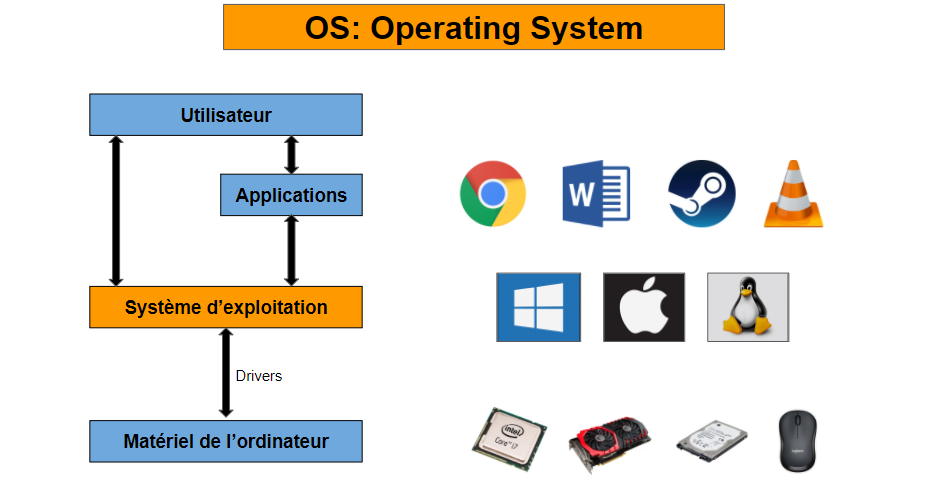
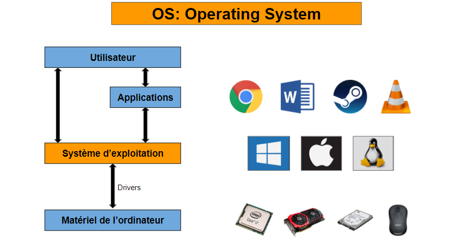

Un processus détermine ce qu'un ordinateur fait avec une entrée, mais la même entrée peut être traitée de différentes manières. Par exemple, appuyer sur la touche A de votre clavier affichera la lettre A lors de l'utilisation d'un logiciel de traitement de texte, ou il pourrait s'agir d'un contrôle directionnel pour déplacer un personnage dans un logiciel de jeu.
htop
htop est un visualiseur de processus et un gestionnaire de processus de surveillance système interactifs. Il est conçu comme une alternative au programme Unix top. Il affiche une liste fréquemment mise à jour des processus en cours d'exécution sur un ordinateur, normalement classés en fonction de la quantité d'utilisation du processeur.
fork()
En informatique, en particulier dans le contexte du système d'exploitation Unix et de ses équivalents, le fork est une opération par laquelle un processus crée une copie de lui-même. Il s'agit d'une interface requise pour la conformité aux normes POSIX et Single UNIX Specification.
Top
La commande top (table des processus) affiche une vue en temps réel des processus en cours d'exécution sous Linux et affiche les tâches gérées par le noyau. La commande fournit également un résumé des informations système qui montre l'utilisation des ressources, y compris l'utilisation du processeur et de la mémoire. Dans ce tutoriel, vous apprendrez à utiliser la commande top sous Linux.
Creation
L'action ou le processus de faire exister quelque chose
Programme
Une série d'instructions logicielles codées pour contrôler le fonctionnement d'un ordinateur ou d'une autre machine.
PPID
Un processus qui crée un nouveau processus est appelé un processus parent ; le nouveau processus est appelé un processus enfant. L'ID de processus parent (PPID) est associé au nouveau processus enfant lors de sa création. Le PPID n'est pas utilisé pour le contrôle des travaux.
Ordonnanceur
Dans les systèmes d'exploitation, l'ordonnanceur est le composant du noyau du système d'exploitation choisissant l'ordre d'exécution des processus sur les processeurs d'un ordinateur. En anglais, l'ordonnanceur est appelé scheduler.
Ressource
Une source d'approvisionnement ou de soutien
Bloque
Un processus est bloqué lorsqu'il est en attente d'une ressource (entrées-sorties...) ou volontairement arrêté et devient éligible lorsqu'il a été réveillé. Comme il existe plus d'un processus dans chaque état il est nécessaire d'associer des files d'attente à chaque cause d'arrêt.
Elu
Lorsqu'un processus est en train de s'exécuter (qu'il utilise le microprocesseur), on dit que le processus est dans l'état "élu". Un processus qui se trouve dans l'état élu peut demander à accéder à une ressource pas forcément disponible instantanément (par exemple lire une donnée sur le disque dur).
Kill
En informatique, kill est une commande de certains systèmes d'exploitation (norme POSIX) utilisée pour demander l'arrêt d'un processus en cours d'exécution.
Pret
PID
L'identifiant de processus ou PID (Process IDentifier) est un code unique attribué sur les systèmes Unix ou Windows à tout processus lors de son démarrage. Il permet ainsi d'identifier le processus dans la plupart des commandes s'appliquant sur un processus donné (comme kill).
pstree
pstree affiche les processus en cours d'exécution sous la forme d'un arbre. La racine de l'arbre est soit pid, soit init si pid est omis. Si un nom d'utilisateur est fourni, tous les arbres de processus prennant racine sur des processus appartenant à cet utilisateur seront affichés.
Blocage
Un blocage est une situation dans laquelle chaque processus informatique attend une ressource qui est attribuée à un autre processus. Dans cette situation, aucun des processus ne peut être exécuté puisque la ressource requise est détenue par un autre processus qui attend également la libération d'une autre ressource.
Systeme d'Exploitation
Un système d'exploitation est un logiciel système qui gère les ressources matérielles et logicielles de l'ordinateur et fournit des services communs pour les programmes informatiques.
Execution
En informatique, l'exécution est le processus par lequel un ordinateur ou une machine virtuelle met en œuvre les instructions d'un programme. Les instructions du programme entraînent des séquences d'actions élémentaires sur la machine d'exécution.
ps
Dans la majorité des systèmes Unix, la commande ps (abréviation de « process status ») affiche les processus machines en cours d'exécution. Un utilitaire similaire top affiche en temps réel les processus actifs. La commande ps est similaire à la commande « tasklist » de Microsoft Windows.
Interblocage
Dans l'informatique concurrente, l'interblocage est toute situation dans laquelle aucun membre d'un groupe d'entités ne peut continuer parce que chacun attend qu'un autre membre, y compris lui-même, agisse, comme l'envoi d'un message ou, plus communément, la libération d'un verrou.


 
